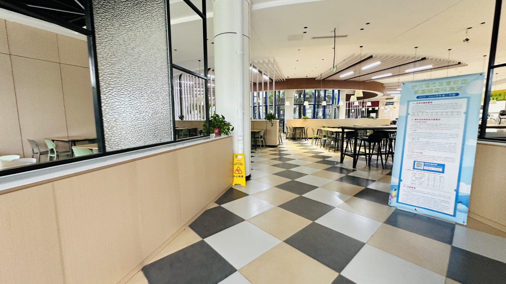

South Cafeteria

There's few people in the cafeteria that early in the morning, so I was able to grab a few pictures of the first floor. Unfortunately, I couldn't get photos of the second floor as I couldn't find it until too late. Either way, here's a few.

While i couldn't get photos of the North Cafeteria, ample seating and options were available.